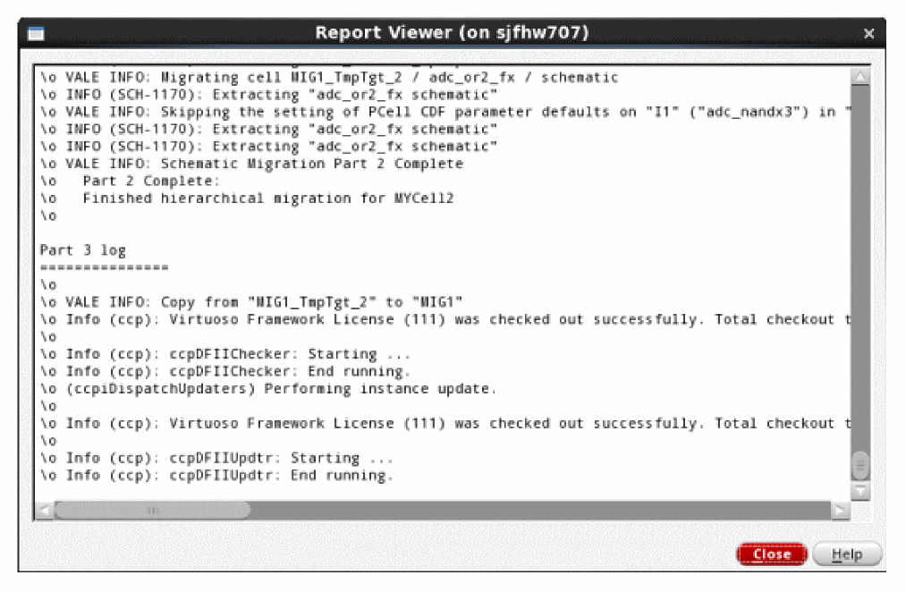

2
Virtuoso Custom Schematic Design Migration
Schematic Migration Overview
Custom schematic design migration uses a CSV file to migrate your schematic design from one technology to another. It consists of the following steps:
- The first part gathers information from each source schematic, guided by the mapping file. It produces a skeleton target schematic that is ready to receive instances from the target technology, and saves mapping details to intermediate files. For more information, refer to Migration Part 1: Save Source Schematic Data.
- The second part completes each skeleton target schematic with instances from the target technology, transforming and rewiring these instances according to the data gathered in the first part. For more information, refer to Migration Part 2: Creating Target Schematic.
- Finally, you can view the migration results in the Results Browser. For more information, refer to Migration Part 3: Viewing Results Browser.
Virtuoso Custom Schematic Design Migration Prerequisites
The prerequisites for running Virtuoso Custom Schematic Design Migration are:
- Virtuoso Studio version: IC23.1
- License: Virtuoso Schematic Editor XL (95115) and Virtuoso_Custom_Design_Migration (95130)
Setting up Schematic Migration
Schematic Migration is a Virtuoso Schematic Editor XL feature.
Tool Setup
You can enable the tool in Virtuoso Schematic Editor XL under Launch – Plugins – Migrate.
Dependencies
To use schematic migration, you need the following:
- A source and target PDK (can be the same PDK for re-mapping)
- Schematic data
- A migration map file (comma separated values file)
Mapping File Syntax
For more details, refer to Mapping File Syntax for Schematic Migration.
Preparing Source Schematic Data
Reviewing the Source Data
The source schematic data should be checked and saved without errors. If errors or missing data exists, fix the source schematic data before running Schematic Migration.
The source schematic library and hierarchy should not have any missing cells or libraries. However, simple missing instance references that have a mapping defined in the map file (not Parameterized Cells) will rebind correctly. However, connectivity checking and advanced symbol change features will not function if the source instance is missing. You can find the utility to perform a Hierarchical or Library Check and Save on the pull-down menu:
Migrate – Schematic – Utilities – Hierarchical Check and Save
Migrate – Schematic – Utilities – Library Check and Save
Using Source Design and Technology
Become familiar with the source design and source technology; also become familiar with the target technology. You can find the utility to query and display the contents of the source schematic data:
Migrate – Schematic – Utilities – Schematic Design Inventory
The Schematic Design Inventory utility provides multiple, different type of information summaries of the source schematic data.
In addition to the Schematic Design Inventory feature, a partial migration map file can be automatically created with
Migrate – Schematic – Utilities – Create Source-side Migration Map
However, this automatically generated migration map file is less efficient than a well-planned migration map.
Creating a Technology Map
This section explains how to create a technology map. As an example, Cadence provides a Generic Process Development Kits (GPDKs) on Cadence Online Support (COS), at http://support.cadence.com. Figure 1 shows a portion of a schematic from the 45nm GPDK (library gpdk045) on the left and the same portion of a schematic from the 10nm GPDK (library cds_ff_mpt) on the right. Both use parameterized cells (Pcells) from their respective PDKs.
Figure 2-1 Example Source and Target Schematic
First, notice the n-type device name (in yellow, near the bottom-center), changes from nmos1v to n1svt. The spreadsheet syntax to accomplish this device map is shown below.
Figure 2-2 Syntax to Accomplish Device Map
Note:- The mapping spreadsheet or map file must have a keyword as the first field of the first line. The first line must have 10 fields. and the first line must have 9 commas. Special characters in the first line should be avoided.
-
The source parameter
w = 1.8umchanges to target parametersnfin = 5, andnf = 3(ignoring thel = 18.0nas it does not relate to the source width). These parameters are Component Description Format (CDF) parameters of the PDK Pcells. The figure below shows the spreadsheet syntax to accomplish this CDF parameter mapping.
Figure 2-3 CDF Parameter Mapping
The above figure shows a hard-coded mapping of the Pcell CDF parameters. Only nmos1v Pcells with a width of 1.8u will map to n1svt Pcells. Unmatched instances of nmos1v or other 45nm PDK Pcells will not be migrated (they will be removed from the target schematic, unless the configuration file variable:
unmappedPassThru = t
See Schematic Mapping Configuration File Options.
If the w, Width, 1.8u match parameter fields are removed, then all gpdk045 nmos1v Pcells would map to cds_ff_mpt n1svt Pcells with nfin = 5 and nf = 3.
Schematic Migration enables further flexibility. For example, the target parameters nfin and nf could be set based on an equation - an equation that may use source parameters and SKILL functions. Given the following relationship of nfin and nf to w, the figure below shows how to create the mapping spreadsheet.
nfin = round(1e6*w/0.36)
nf = round(1e6*w/0.6)
Figure 2-4 Mapping Spreadsheet
The cc_ prefix, which appears before the w parameter, indicates that the parameter is a copy of the source parameter.
Finally, the process of building a mapping file involves creating a map for all the instances. The below figure completes the mapping for the example schematic. More information on the conditional, calc, syntax below is in the Mapping File Syntax for Schematic Migration.
-
symbolOffsetX, symbolOffsetY, keepPinLoc, keepCenter: Positions the target symbol. -
pinRename: Describes the association between source and target instance pins that have the same function but different names. -
connectPins: Connects the target pins to other target pins -
symbolName: Renames the target symbol -
symbolSize: Resizes a target symbol when asymbol_xformview type is used. -
useStubs, stubFromPinNet: Connects pins by wire stub. -
moveAndStub: Places a symbol outside the current schematic boundary and using wire stubs to connect pins. -
useInstPreCheck: Is an instance specific option, related to the global option, for checking whether an instance will create a short before it is placed. -
mfactor2vector, vector2mfactor:map iterated instances: (That is <0:3>) to mfactor (m=4) or vice versa. -
postMapTrigger: Applies an instance trigger function after mapping. -
defSymOrient: Rotates a target symbol to match its source symbol orientation.
For more details about other Parameters, see Mapping File Syntax for Schematic Migration.
Creating two cds.lib files
Since two PDKs are involved, two cds.lib files may be created, one for each, unless the two PDKs may co-exist without overlapping parameters or callback function names. Consider naming these as cds.lib.<source technology> and cds.lib.<target technology>. In the example above, the two files would be cds.lib.gpdk045 and cds.lib.cds_ff_mpt. Each cds.lib file should only contain technology libraries from one PDK. These files will be used in the Schematic Migration flow.
Running SKILL pre-trigger Function Per Instance or Cell
A user-defined pre-trigger function can be run before the migration on the source data. Schematic Mapping Options, Configuration File, Configuration Options describes the setting preMigInstTrigger that applies a pre-trigger function on source instances before migration. Similarly, the setting, preMigCellTrigger, will run the pre-trigger function on the source cells. The function will run per instance or per cell before the migration, such that each function receives the instance, or cellview object as an argument.
Migration Part 1: Save Source Schematic Data
Select Migrate – Schematic – Mapping – Save Source Schematic Data (Part 1).
In the form that appears after selecting Save Source Schematic Data (Part 1), select the target library or select Create New... in the target library and follow the flow through the creation of a new target library.
Figure 2-6 The New Library Form
Figure 2-7 Save Source Schematic Data (Part 1) Form
The figure above shows more options than are necessary to complete Part 1 for the single cell migration. No Process Hierarchy, Process all referenced libraries, Migration Mapping File or Design Library Mapping entries are needed for a single cell migration. However, the more options are there to enable flexibility for more complex migrations.
First, if the source schematic is a hierarchical schematic, then the Process Hierarchy check box under the Source group box will traverse the schematic hierarchy and migrate all the cells in the source library hierarchy, filtered by the options View Name, Process all views of each cell, Exclude View List, and Exclude Library List. Libraries other than the source library hierarchy (and not listed in the mapping file) will not be migrated by default. If there are outside design library references that should be migrated, select the Process all referenced libraries, and either enter the source and target library map as a space separated pair, and separate each pair by a comma; or use the corresponding Browse button to specify a comma separated values file. For example, the Design Library Mapping comma separate values file is shown below:
# Source library, Target Library
Framework_Examples_45_RefLib1, MigLib1
Framework_Examples_45_RefLib2, MigLib1
#Framework_Examples_45_RefLib3, MigLib1
Framework_Examples_45_RefLib3, MigLib2
At the completion of Part 1, Schematic Migration will print the library mapping summary:
INFO: PART 1 INPUT SUMMARY
> The migration map libraries:
Framework_Examples_45_RebindLib1
gpdk045
> The source design libraries:
Framework_Examples_45
> The exclude libraries:
behavioral_lib
basic
analogLib
US_8ths
borders
The following cells have no mapping, No_Map:
gpdk045 nmos1v_lvt symbol, instance NM3 in example_SchMig_allDevs
gpdk045 nmos1v symbol, instance NM0 in example_SchMig_allDevs
gpdk045 nmos1v symbol, instance NM0 in QATest2c
The following cells will carry-over to the new schematic, As_Is, because the library name is not listed in the "Design Library Mapping" field in the form, or in the Migration Map File:
PHLib1 SchMig_Cell2 symbol, instance I1 in QATest2c
Instance references outside the source design library fall in one of three categories:
- Map Library: the map file contains a reference to this library
-
Exclude Library: the library is listed in the input environment variable
excludedLibsin theschMapDefaults.il(configuration file) - Unknown Library: Not a map library, design (migrate) library, or exclude library
Second, the Process Library check box will run all the schematics of a library as single cells, filtered by the options View Name, Process all views of each cell, Exclude View List, and Exclude Library List. The hierarchy of each schematic will not be traversed unless Process all referenced libraries is selected.
Third, the View Name source field limits the cell view types to traverse. If all view types should be traversed, then select the Process all views of each cell check box. Specific view types may be excluded using the input environment variable, excludedViews, in the schMapDefaults.il (configuration file).
Fourth, Schematic Migration includes a number of options for renaming migrated cell views. In the target field, the Cell Name may be set to Use name options below. This enables the target field Name Options with its qualifiers Prefix, Replace, and Suffix. These options apply for all the cells in Process Hierarchy and Process entire Library, and for all migrated view types.
For example, if the source Cell Name is Aug20_doc1. The following examples will use this setting to demonstrate how to rename migrated cell views.
Finally, when all the options are set, click OK. Part 1 will run, and display Schematic Migration: Part 1 when it completes successfully. Check the CIW for error messages to see if there is anything to correct before continuing to Part 2.

Figure 2-8 Schematic Migration: Part 1
If the above window does not appear, or Part 1 does not display the completion message in the CIW, check the CIW for error messages.
Otherwise, close Virtuoso, if performing a migration with two different PDKs that overlap parameters or callback function names, and continue to Part 2.
Handling Instances and Parameters
This section describes how schematic migration handles instances and parameters:
-
unmappedPassThru = t: Typically a same PDK Flow (intra-PDK migration)
-
Change Pcell: The map file should map one Pcell to another, nmos1v to
nmos1v_hvtfor example, using all the parameter mapping capability to meet the migration needs (that iswidth = cc_width). All Pcells used in the design hierarchy or library should have a map in the mapping file. -
Change Pcell parameter only: The map file should specify a mapping of one Pcell to itself, using all the parameter mapping capability to meet the migration needs (i.e.
width = cc_width*2) - No Pcell change needed: Leave the Pcell out of the map file, it will appear in the target cell unmodified.
-
Change Pcell: The map file should map one Pcell to another, nmos1v to
-
unmappedPassThru = nil:Typically a different PDK Flow (inter-PDK migration)-
Change Pcell: The map file should map one Pcell to another, nmos1v to n1hvt for example, using all the parameter mapping capability to meet the migration needs (that is,
width = cc_width/1.5). All Pcells used in the design hierarchy or library should have a map in the mapping file. - Change Pcell parameter only: Since this is a different PDK migration, this situation is not supported.
-
No Pcell change needed: This is uncommon for a different PDK migration since the source PDK will be removed, all Pcells must be mapped or mapped to the keyword cell name,
placeholder. If any Pcells are missing a mapping in the map file, then they will be missing from the target schematic (deleted and not re-created).
-
Change Pcell: The map file should map one Pcell to another, nmos1v to n1hvt for example, using all the parameter mapping capability to meet the migration needs (that is,
- For Both Flows:
Migration Part 2: Creating Target Schematic
Before you create target data, ensure to complete the steps shared in the section, Migration Part 1: Save Source Schematic Data.
If performing a two-session migration (generally an inter-PDK migration), and once Migration Part 1: Saving Source Data is complete, copy the cds.lib.<target technology> file to cds.lib and restart Virtuoso. Otherwise, for a one-session migration (generally an intra-PDK migration), you can skip this step.
The difference between the one-session migration and the two-session migration is that the two-session migration requires a Virtuoso restart while pointing to the target PDK, and not pointing to the source PDK. To ignore whether the source PDK is removed from the current session or not, the following configuration file option is set, as shown below:
bypassLibCheck = t
Open the new schematic, created by Part 1, with the target library selected or created in Part 1, and the target name used in Part 1.
Figure 2-9 Schematic with Wires and Unmodified Instances
Running SKILL Post-trigger Function Per Instance or Cell
There are many options to control how instances are recreated.
A user-defined post-trigger function can be run after creating the target data. Schematic Mapping Options, Configuration File, Configuration Options describes the settings postMigInstTrigger and postMigCellTrigger. These environment variables apply post-trigger functions to the instance or cell after recreating instances, the function receives the instance or cellview object as an argument.
Because the tool setup has already been completed, the Migrate menu appears on the Virtuoso Schematic Editor GUI.
Select Migrate – Schematic – Mapping – Create Target Schematic (Part 2).
Schematic Migration Part 2 uses the results from Part 1. The Select the migration to finish form (figure below) is displayed and points Part 2 to the correct source data set. In this way, it is possible to migrate multiple cellviews through Part 1, close Virtuoso, then finish them one after another in Part 2.
Figure 2-10 The Source Data Selection Form
When Schematic Migration Part 2 finishes successfully, it will open a dialog box with two buttons (see Successful Completion of Schematic Migration Part 2).
- The OK button will simply close the dialog box.
- The Open Results Browser button will open the Migration Results Browser
Any one of these buttons completes Schematic Migration, Part 2.
Figure 2-11 Successful Completion of Schematic Migration Part 2
Migration Part 3: Viewing Results Browser
After creating the target data, the Migration Results Browser is displayed at the end of Part 2, with the button in Successful Completion of Schematic Migration Part 2, or by using the Migrate menu, Migration Results Browser (see Opening the Migration Results Browser). The configuration file describes a setting migBrowserStatusFilters that applies a default filter. When the Migration Results Browser is opened from the Part 2 message dialog, Open Results Browser, the default filter does not apply. The filter may be dynamically modified to change what is displayed, see Schematic Mapping Options.
Figure 2-12 Opening the Migration Results Browser
The results browser can be opened from the cells in the hierarchy, based on the results file for the top cell that must be present in the run directory. When migration results browser is opened from a lower level cell, the tool looks for any results files present in the run directory and if one or more files contain the results for the current cell, Virtuoso provides an option to select a results file, as shown below:
This gives a more flexible entry point from any cell in the hierarchy and display its hierarchy in the Results Browser. When there are no results in run directory that contain the results for current cell, then a dialog box will display as follows:
Figure 2-14 The Results File Not Found Form
In the Migration Results Browser, each column is sizable and sortable. The Status column in the Migration Summary is the most important column. It is a guide for the design to review the results. See Schematic Mapping Options on filtering the Status column as desired.
When one or more row is selected, and the Open Selection(s) button is pressed, the browser will open the referenced cellviews and create markers for the indicated results. By default, the maximum number of cells it will open is 5, but that may be changed with the configuration file option:
maxCellsToOpen = <integer>
Performing Multiple Cell Schematic Migration
Multiple cell schematic migration is a group of tools that allows users to migrate a list of selected design top cells from source libraries to target libraries by providing a text file as input. The multiple cell schematic migration commands are available in the Virtuoso CIW Menu.
To run multiple cell schematic migration:
- Build a file that contains a list of top cells and the related options. See section, Top Cell List and Preset Files
-
Set the environment settings in
schMapDefaults.il. See section, Environment Settings in schMapDefaults.il - For running multiple cells, the process is divided into a three step process to prevent Virtuoso from destroying data from child cells that maybe shared between top cells and does not impact memory. For details, see section, Using Virtuoso Menu.
Top Cell List and Preset Files
A cell list file has eight columns: index, source library, source cell, source view, target library, target view, and preset. Each row defines one top cell migration. The text file is in a SKILL data list form.
- Column 1: index, an integer starting from 1.
- Column 2: source library name string.
- Column 3: a source top cell name string from the source library.
- Column 4: source top cell view string. always “schematic”.
- Column 5: target library name string to migrate to.
- Column 6: target top cell name string to migrate to.
- Column 7: target top cell view string. always “schematic”.
- Column 8: preset file name. Usage of preset file will be explained later. If no special request, it can be just empty string.
Both cell list file and preset files need to be placed in the multiple cell schematic migration data input folder. This data folder will be mentioned in the part of working environment settings:
An example of cell list file, celllist.txt, is as follows:
- Source and target view columns are always schematic.
-
Preset column allows to specify a preset file. Preset file is in the same format of
form89.presetused in interactive schematic migration for configuration of the migration Part1. In interactive mode, this file is generated by Part1 input settings form and saved in migration working directory. But, in multiple cells processing mode, since the settings are mainly for a list of top cells migration, most of the fields are with default values fromschMapDefaults.ilfile. Only limited fields need to be modified if the values are not same as the defaults. An example preset file with design reference library migration is given below.
preset.default. If preset field is empty string “”, the default preset file will be used. If no preset.default file exists in the cell list folder, one file will be generated internally, which is basically for the top cell migration with hierarchy option. If a preset file is provided, it is then used accordingly.
An example of a preset file with design reference library migration is as follows:
form89DoHier = t
form89DoLib = nil
form89DoAllViews = nil
form89DoAllRefLibs = t
form89TgtLibSel = "MIG0"
form89TgtCellSel = "Use source name"
form89TgtView = "schematic symbol"
form89MigMap = "/path/……/map_file.csv"
form89TgtNameOpt = ""
form89TgtNmOpts = "Prefix"
form89SrcView = "schematic symbol"
form89TermMap = nil
form89ExclLibs = "basic analogLib US_8ths borders"
form89ExclViews = "text adexl constraint physConfig maestro layout abstract"
form89DesLibMaps = "Framework_Examples_45_RefLib2 MigLib1"
celllist.txt file. Only limited fields are needed to be provided with values.-
form89DoHier = t
Is fixed for top cell with hierarchy. -
form89TgtLibSel = “”
Target library name. Set or no set, the final value will be from celllist.txt target library name. -
form89TgtCellSel = “Use source name”
Target cell name. Set or not set, the final value will be fromcelllist.txttarget cell name. -
form89TgtView = "schematic symbol" form89SrcView = "schematic symbol"
Fixed to “schematic symbol". -
form89MigMap = “/path/……/map_file_name.csv"
Migration map file with path. -
form89DoAllRefLibs = t form89DesLibMaps = "Framework_Examples_45_RefLib2 MigLib1"
Enable and specify reference lib migration.form89DoAllRefLibsset tot, andform89DesLibMapsset to mapping string, or map file as in interactive GUI. -
form89ExclLibs = "basic analogLib US_8ths borders" form89ExclViews = "text adexl constraint physConfig maestro layout abstract"
Exclude libraries and views. Set same withschMapDefaults.il. -
form89DoLib = nil
Not used. Set to nil. -
form89DoAllViews = nil
Not used. Set to nil. -
form89TgtNameOpt = “” form89TgtNmOpts = “Prefix”
Not used. -
form89TermMap = nil
Not used. Set to nil.
Another example of top cells list file, celllist.txt and the preset files:
form89DoHier = nil
form89DoLib = nil
form89DoAllViews = nil
form89DoAllRefLibs = nil
form89TgtLibSel = "Mig1"
form89TgtCellSel = "Use source name"
form89TgtView = "schematic symbol"
form89MigMap = "../SchMig_QA_Test1.csv"
form89TgtNameOpt = ""
form89TgtNmOpts = "Prefix"
form89SrcView = "schematic symbol"
form89TermMap = nil
form89ExclLibs = "basic analogLib US_8ths borders"
form89ExclViews = "text adexl constraint physConfig maestro layout abstract"
form89DesLibMaps = ""
form89DoHier = t
form89DoLib = nil
form89DoAllViews = nil
form89DoAllRefLibs = nil
form89TgtLibSel = "Mig2"
form89TgtCellSel = "Use source name"
form89TgtView = "schematic symbol"
form89MigMap = "../SchMig_QA_Test2.csv"
form89TgtNameOpt = ""
form89TgtNmOpts = "Prefix"
form89SrcView = "schematic symbol"
form89TermMap = nil
form89ExclLibs = "basic analogLib US_8ths borders"
form89ExclViews = "text adexl constraint physConfig maestro layout abstract"
form89DesLibMaps = ""
form89DoHier = t
form89DoLib = nil
form89DoAllViews = nil
form89DoAllRefLibs = nil
form89TgtLibSel = "Mig3"
form89TgtCellSel = "Use source name"
form89TgtView = "schematic symbol"
form89MigMap = "../SchMig_QA_Test3.csv"
form89TgtNameOpt = ""
form89TgtNmOpts = "Prefix"
form89SrcView = "schematic symbol"
form89TermMap = nil
form89ExclLibs = "basic analogLib US_8ths borders"
form89ExclViews = "text adexl constraint physConfig maestro layout abstract"
form89DesLibMaps = ""
form89DoHier = t
form89DoLib = nil
form89DoAllViews = nil
form89DoAllRefLibs = t
form89TgtLibSel = "Mig4"
form89TgtCellSel = "Use source name"
form89TgtView = "schematic symbol"
form89MigMap = "../SchMig_QA_Test4.csv"
form89TgtNameOpt = ""
form89TgtNmOpts = "Prefix"
form89SrcView = "schematic symbol"
form89TermMap = nil
form89ExclLibs = "basic analogLib US_8ths borders"
form89ExclViews = "text adexl constraint physConfig maestro layout abstract"
form89DesLibMaps = "../Include/SchMig_DesignLibraryMapping.csv"
form89DoHier = t
form89DoLib = nil
form89DoAllViews = nil
form89DoAllRefLibs = nil
form89TgtLibSel = "Mig5"
form89TgtCellSel = "Use source name"
form89TgtView = "schematic symbol"
form89MigMap = "../SchMig_QA_Test5.csv"
form89TgtNameOpt = ""
form89TgtNmOpts = "Prefix"
form89SrcView = "schematic symbol"
form89TermMap = nil
form89ExclLibs = "basic analogLib US_8ths borders"
form89ExclViews = "text adexl constraint physConfig maestro layout abstract"
form89DesLibMaps = ""
form89DoHier = t
form89DoLib = nil
form89DoAllViews = nil
form89DoAllRefLibs = nil
form89TgtLibSel = "Mig6"
form89TgtCellSel = "Use source name"
form89TgtView = "schematic symbol"
form89MigMap = "../SchMig_QA_Test6.csv"
form89TgtNameOpt = ""
form89TgtNmOpts = "Prefix"
form89SrcView = "schematic symbol"
form89TermMap = nil
form89ExclLibs = "basic analogLib US_8ths borders"
form89ExclViews = "text adexl constraint physConfig maestro layout abstract"
form89DesLibMaps = ""
form89DoHier = t
form89DoLib = nil
form89DoAllViews = nil
form89DoAllRefLibs = nil
form89TgtLibSel = "Mig7"
form89TgtCellSel = "Use source name"
form89TgtView = "schematic symbol"
form89MigMap = "../SchMig_QA_Test7.csv"
form89TgtNameOpt = ""
form89TgtNmOpts = "Prefix"
form89SrcView = "schematic symbol"
form89TermMap = nil
form89ExclLibs = "basic analogLib US_8ths borders"
form89ExclViews = "text adexl constraint physConfig maestro layout abstract"
form89DesLibMaps = ""
In this example, since each top cell migration target library and migration map file is different, each top cell requires a preset file. Usually, the migration target library can be same, or can be grouped into a few, and migration map files can be shared by a group of top cells. Then, the celllist.txt can be rearranged, and the needed preset files can be reduced.
For example, if all the top cells are migrated into the same target lib Mig, and share a combined map file, SchMig_Test.csv, cell Test1 does not require hierarchy, cells Test2, Test3, Test4, Test5, Test6 and Test7 need hierarchy, and cell Test4 need reference design library migration, the celllist.txt and preset files are presented below:
((1 "Examples" "Test1" "schematic" "Mig" "Test1" "schematic" "preset1.txt")
(2 "Examples" "Test2" "schematic" "Mig" "Test2" "schematic" "preset2.txt")
(3 "Examples" "Test3" "schematic" "Mig" "Test3" "schematic" "preset2.txt")
(5 "Examples" "Test5" "schematic" "Mig" "Test5" "schematic" "preset2.txt")
(6 "Examples" "Test6" "schematic" "Mig" "Test6" "schematic" "preset2.txt")
(7 "Examples" "Test7" "schematic" "Mig" "Test7" "schematic" "preset2.txt")
(4 "Examples" "Test4" "schematic" "Mig" "Test4" "schematic" "preset3.txt"))
form89DoHier = nil
form89DoLib = nil
form89DoAllViews = nil
form89DoAllRefLibs = nil
form89TgtLibSel = "Mig"
form89TgtCellSel = "Use source name"
form89TgtView = "schematic symbol"
form89MigMap = "../SchMig_Test.csv"
form89TgtNameOpt = ""
form89TgtNmOpts = "Prefix"
form89SrcView = "schematic symbol"
form89TermMap = nil
form89ExclLibs = "basic analogLib US_8ths borders"
form89ExclViews = "text adexl constraint physConfig maestro layout abstract"
form89DesLibMaps = ""
form89DoHier = t
form89DoLib = nil
form89DoAllViews = nil
form89DoAllRefLibs = nil
form89TgtLibSel = "Mig"
form89TgtCellSel = "Use source name"
form89TgtView = "schematic symbol"
form89MigMap = "../SchMig_Test.csv"
form89TgtNameOpt = ""
form89TgtNmOpts = "Prefix"
form89SrcView = "schematic symbol"
form89TermMap = nil
form89ExclLibs = "basic analogLib US_8ths borders"
form89ExclViews = "text adexl constraint physConfig maestro layout abstract"
form89DesLibMaps = ""
form89DoHier = t
form89DoLib = nil
form89DoAllViews = nil
form89DoAllRefLibs = t
form89TgtLibSel = "Mig"
form89TgtCellSel = "Use source name"
form89TgtView = "schematic symbol"
form89MigMap = "../SchMig_Test.csv"
form89TgtNameOpt = ""
form89TgtNmOpts = "Prefix"
form89SrcView = "schematic symbol"
form89TermMap = nil
form89ExclLibs = "basic analogLib US_8ths borders"
form89ExclViews = "text adexl constraint physConfig maestro layout abstract"
form89DesLibMaps = "../Include/SchMig_DesignLibraryMapping.csv"
Environment Settings in schMapDefaults.il
Most of the settings of single migration for hierarchy option are still valid for multiple cells migration process. Here is a list of shared settings for multiple cells process.
The working folder setting will be used for multiple cells process working folder also.
runDir ="./SCHMAP_RUNDIR"Run directory.
mapFile ="./SCHMAP_CONFIG/mapping.csv"Mapping file.
sourceTech = "gpdk045" Source Technology.
targetTech = "cds_ff_mpt" Target Technology.
excludedLibs = "basic analogLib US_8ths borders" Default excluded libraries.
excludedViews = "text adexl constraint physConfig maestro layout abstract" Default excluded views.
The new introduced settings for multiple cells process:
mcRunDir = "./SCHMAP_RUNDIR/MCRUNDIR"
cellsFile = "./SCHMAP_RUNDIR/MCRUNDIR/cellist.txt"
tmpTgtLibLoc = "./SCHMAP_RUNDIR/tgtLibs"
tmpTgtLibPrefix = "TmpTgt_"
In the migration, a temporary target library folder will be created for each top cell migration. The temporary library name is Target_Library_Name + _prefix + index, for example, TopCell_TmpTgt_1.
defineLibs = t
This is optional one. If part 2 migration is running on different Virtuoso and at different location with Part1, the cds.lib file may not have the target migration libraries defined in Part1. If this option is enabled, multiple cells migration Part2 will create the definitions for the target libraries in the cds.lib file. However, if Part2 uses cds.lib with the target libraries defined in Part1, this option should not be enabled.
Using Virtuoso Menu
-
To use the multiple cell schematic migration feature in Virtuoso, click the below submenus:
In the CIW, select Tools – Migrate – Multiple Schematics Mapping. The Multiple Schematics Mapping submenu includes the following items:
Figure 2-15 Multiple Schematics Mapping Menu
Multicell Schematic Mapping Settings
You must use the Multicell Schematic Mapping Settings form to provide all necessary information before starting the multiple cell schematic migration.
Figure 2-16 The Multicell Schematic Mapping Settings Form
Save Multiple Source Schematic Data (Part 1)
This is equivalent to interactive migration Part 1, instead it processes a list of top cells defined in a cell list file. It displays the Part 1 confirmation form.
Figure 2-17 The Part 1 Confirmation Form
Create Multiple Target Schematic (Part 2)
This is equivalent to interactive migration Part 2. It displays the Part 2 confirmation form.
Figure 2-18 The Part 2 Confirmation Form
Finalize Multiple Target Schematic (Part 3).
It displays the Part 3 confirmation form.

Figure 2-19 The Part 3 Confirmation Form
View Logs Report and Results
A report form displays processed list of cells. Columns 1 to 8 are cells list information. The last three columns are three parts processing status. Right-click on a row to display the context menu, or click Report Viewer or the Result Browser button to view logs, or to launch the Result Browser for the selected cell.
Figure 2-20 The Results Viewer Form
-
The Report Viewer form displays the reports of the 3 part3.
Figure 2-21 The Report Viewer Form -
Result Browser.
Views the processing results as interactive migration.
Figure 2-22 The Schematic Migration Results Browser Form -
Clean up utility.
The software allows you to clean the working folder, temporary target libraries, or all the libraries. Note that the cleaning utility is applied to the same process with the similar settings. For example, if migration with a selected cell list has been setup, and has run part 1, part 2, and part 3, then you can run the utility to clean up the created files. If the settings have been changed, the files created in previous processes will not be removed.
The Multiple Cells Migration Cleanup Form
Return to top